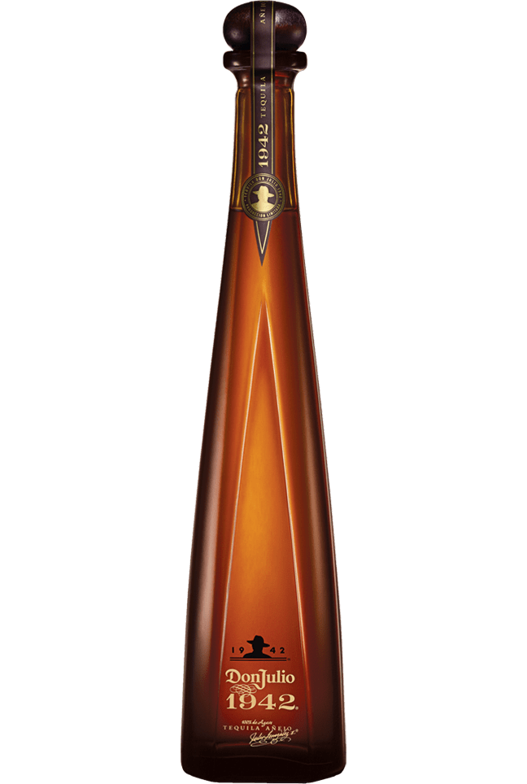

Tequila 1942
Célebre en exclusivos bares de copas, restaurantes y discotecas, el icónico tequila Don Julio 1942® es la elección de los conocedores de todo el mundo. Producido en pequeños lotes y añejado durante un mínimo de dos años y medio, el tequila Don Julio 1942® se hace artesanalmente en homenaje al año en que don Julio González comenzó su aventura de fabricar tequila.
